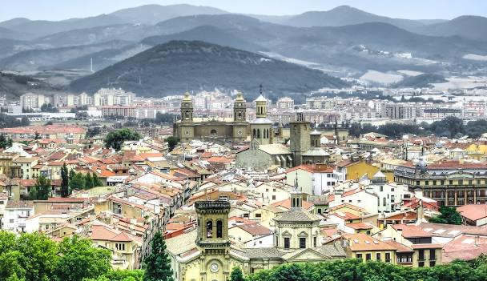

Descubre la belleza de Pamplona

Vista aérea del casco viejo de Pamplona
Pamplona, la capital del Reyno y tu escapada perfecta
Una ciudad amurallada, verde, gourmet y jacobea.
¿Estás planificando tu escapada? ¡Pues este es el sitio pefecto! Y aquí te vamos a dar toooda la información que se nos puede ocurrir para hacer de tu viaje a Pamplona una experiencia TOP.
- Visitas culturales; que el saber no ocupa lugar y hay que hacerle un hueco.
- Un casco histórico que da gloria verlo de lo bien cuidado que está.
- Un conjunto amurallado con una ciudadela renacentista que es la envidia de las ciudadelas.
- Zonas verdes y jardines que dan para un cuadro impresionista.
- Ambiente cultural, bullicio jacobeo, tiendas de las de toda la vida.
- Bares de pinchos con auténticas virguerías culinarias.
- unas fiestas patronales conocidas en todo el mundo.
- .......... y una calidad de vida que se palpa en cuanto llegas a la ciudad.
Ya ves, si pensabas conocer Pamplona en un día no va a ser fácil, y probablemente 24 horas se te queden cortas.
Pamplona es un destino perfecto para un fin de semana, así que lo mejor es que te reserves dos días o un puente. Para qué engañarnos, Pamplona tiene alma conquistadora y es difícil no sucumbir a sus encantos. Y ahora verás por qué.